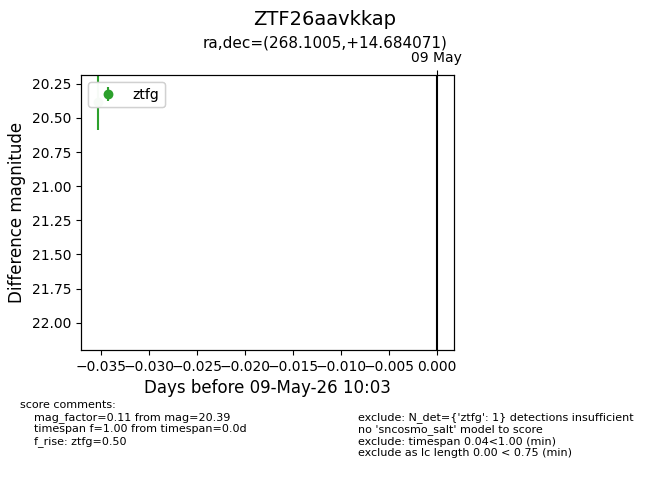
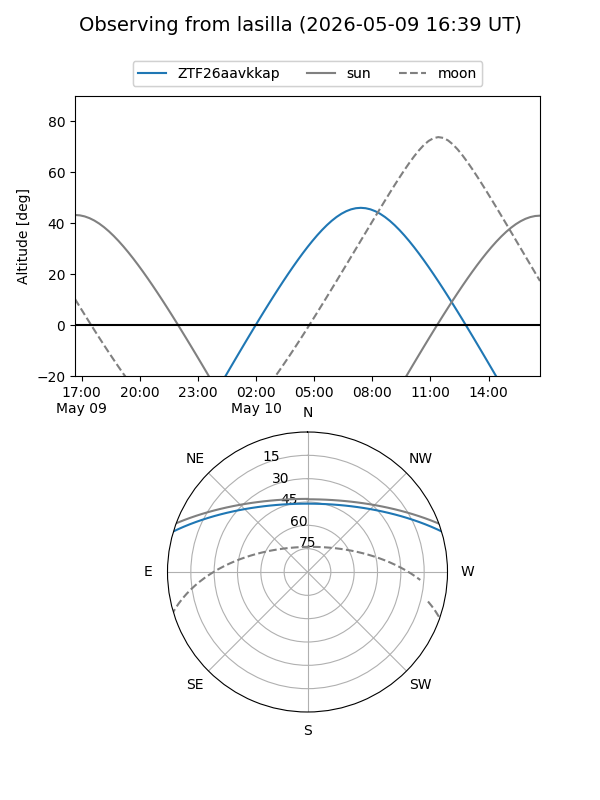
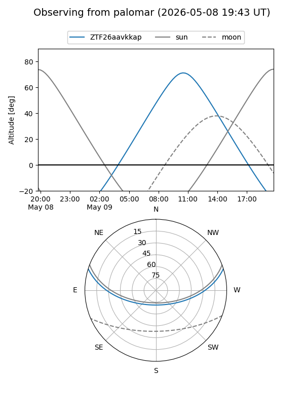

ZTF26aavkkap
Target ZTF26aavkkap at 2026-05-09 10:04
Aliases and brokers:
FINK: link
Lasair: link
ALeRCE: link
alt names
ZTF26aavkkap (ztf,fink_ztf)
Coordinates:
equatorial (ra, dec) = 268.1005,+14.68407
equatorial (HMS+DMS) = 17:52:24.12,+14:41:02.66
galactic (l, b) = (39.8340,+19.56701)
Flags:
Photometry:
last ztfg=20.39
1 ztfg detections
Lightcurve

Visibility


Additional plots